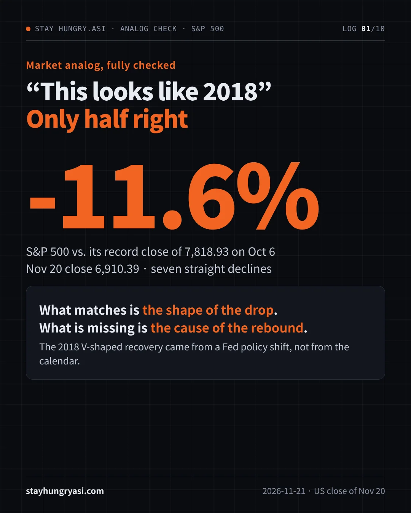
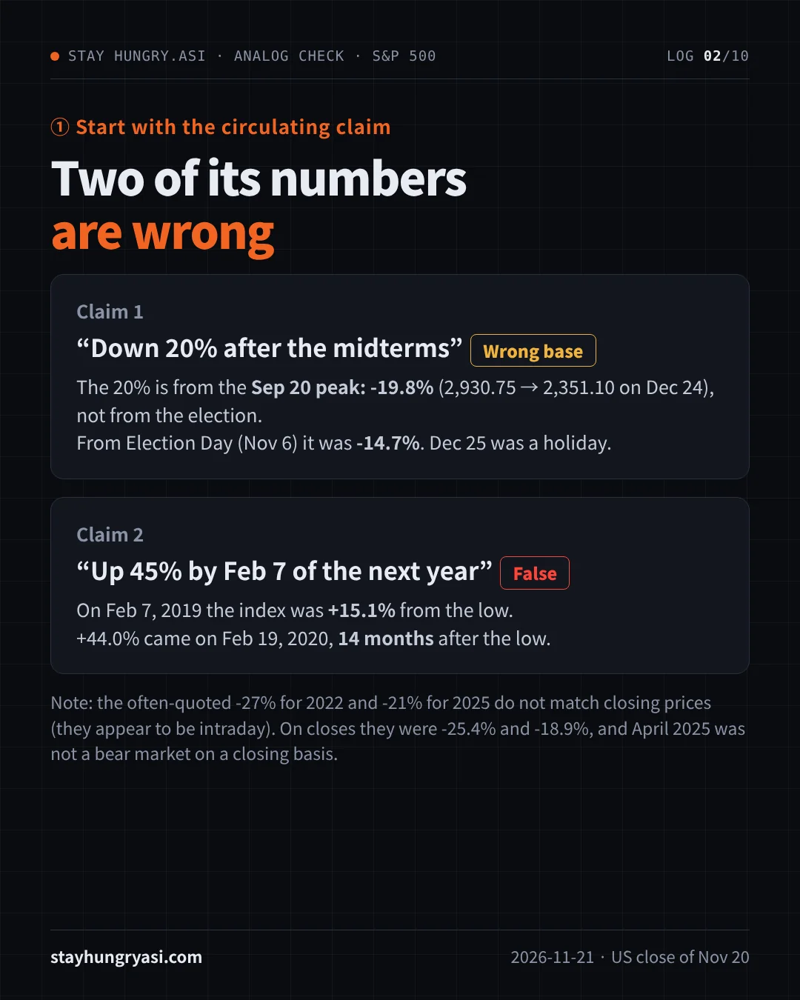
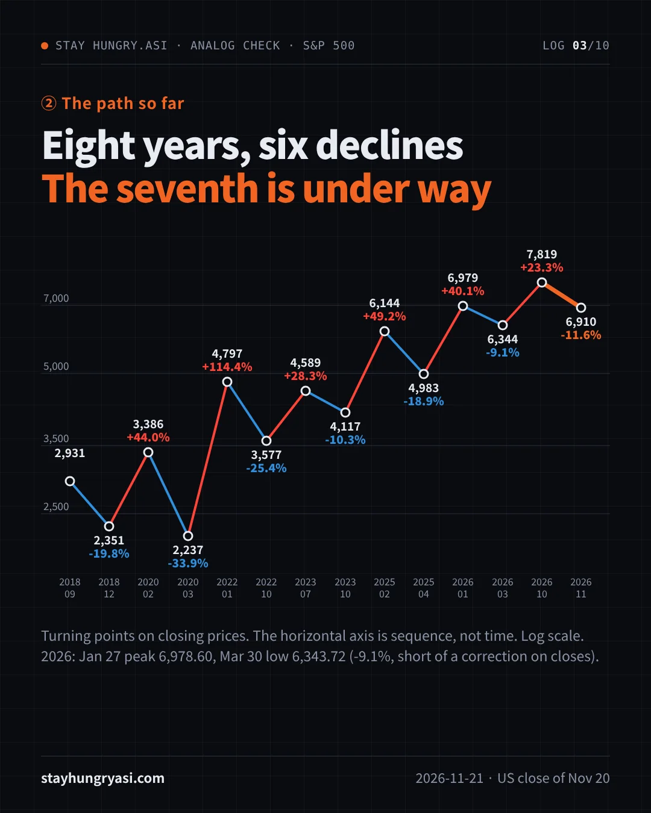
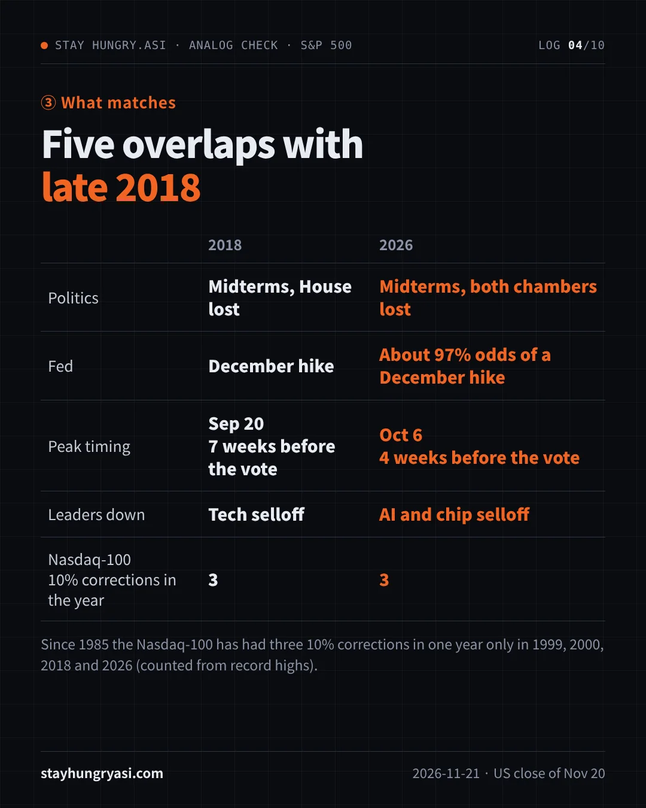
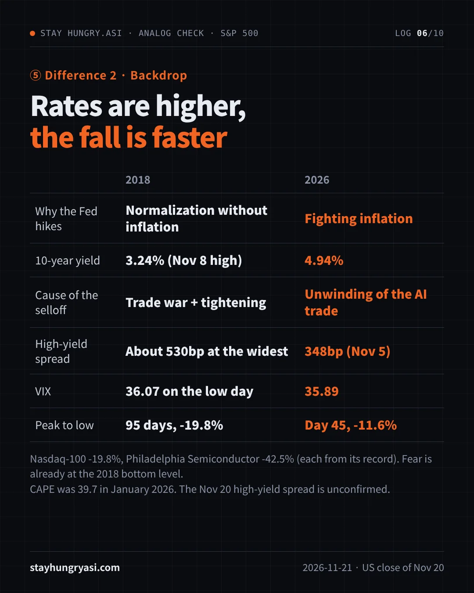

Data as of Nov 21, 2026 (Korea time), US close of Nov 20 · stayhungryasi.com
Conventions: all index levels are closing prices checked against a daily table of closes. Path probabilities are the author's subjective judgment, and path levels apply past drawdowns; they are not forecasts. Items that could not be confirmed are marked 'unconfirmed'. This is not investment advice.
The key points in 10 cards. Tap an image to enlarge it.
| Claim | Actual on closes | Verdict |
|---|---|---|
| “Down 20% after the midterms” | 2018-09-20 2,930.75 → 2018-12-24 2,351.10 = -19.78%. From Election Day (2018-11-06) at 2,755.45: -14.67%. Dec 25 was a holiday | The 20% is from the peak. After the election it was about 15% |
| “Up 45% by Feb 7 of the next year” | 2019-02-07 2,706.05 = +15.10% from the low. 2020-02-19 3,386.15 = +44.02% | False. It took 14 months |
Note: the often-quoted -27% for 2022 and -21% for 2025 do not match closing prices (they appear to be intraday). On closes they were -25.4% and -18.9%, and April 2025 was not a bear market on a closing basis.
| Peak | Low | Decline | Rise from prior low |
|---|---|---|---|
| 2018-09-20 2,930.75 | 2018-12-24 2,351.10 | -19.8% | - |
| 2020-02-19 3,386.15 | 2020-03-23 2,237.40 | -33.9% | +44.0% |
| 2022-01-03 4,796.56 | 2022-10-12 3,577.03 | -25.4% | +114.4% |
| 2023-07-31 4,588.96 | 2023-10-27 4,117.37 | -10.3% | +28.3% |
| 2025-02-19 6,144.15 | 2025-04-08 4,982.77 | -18.9% | +49.2% |
| 2026-01-27 6,978.60 | 2026-03-30 6,343.72 | -9.1% | +40.1% |
| 2026-10-06 7,818.93 | 2026-11-20 6,910.39 (in progress) | -11.6% | +23.3% |
Sources give 4,796.56 or 4,796.59 for the 2022-01-03 close; 4,796.56 is used. Time from peak to a new record: 215 days in 2018, 181 in 2020, 746 in 2022 and 128 in 2025.
| Item | 2018 | 2026 |
|---|---|---|
| 33 trading days after the peak | -6.0% (2018-11-06) | -11.6% (2026-11-20) |
| When -11.6% was reached | Day 60 (2018-12-17, 2,545.94) | Day 33 |
| 13 trading days after the election | -3.0% (2,755.45 → 2,673.45) | -8.7% (7,568.92 → 6,910.39) |
| Fed in December | Hike, then a shift on 2019-01-04 | About 97% odds of a hike |
| 10-year yield | 3.24% (2018-11-08) → 2.67% (2019-01-04) | 4.94% (2026-11-20) |
| High-yield spread | About 530bp at the widest | 348bp (2026-11-05); 2026-11-20 unconfirmed |
| VIX | 36.07 (low day) | 35.89 |
| Leading indexes | - | Nasdaq-100 -19.8%, Philadelphia Semiconductor -42.5% |
Same trading-day comparison (days 3, 8, 13, 18, 23, 28 and 33 after the peak): 2018 at -0.5, -0.2, -1.7, -4.1, -6.5, -8.5, -6.0%. 2026 at -0.1, -2.0, -2.5, -3.1, -5.7, -3.3, -11.6%.
| Driver of the 2018 rebound | Now | Basis |
|---|---|---|
| A Fed policy shift | Absent | The “patient” remark of Jan 4, 2019 started the V. Now almost all policymakers expect more hikes. |
| A geopolitical truce | Partial | In 2018 it was the US-China trade truce. Today's counterpart is pressure to end the Iran war and lower oil. |
| Falling long-term yields | Partial | In 2018 the 10-year fell from 3.24% (Nov 8) to 2.67% (Jan 4, 2019). Now it is 4.94%, -0.19 points over a month. |
For a 2018-type path, a signal that hikes will pause is needed at the December FOMC or in January.
| Date (days after peak) | 2018 path | 2022 path | 2000 path |
|---|---|---|---|
| 2026-12-31 (86) | 6,936 | 7,502 | 7,376 |
| 2027-01-08 (94) | 6,272 | 7,336 | 7,423 |
| 2027-01-29 (115) | 6,890 | 6,989 | 7,379 |
| 2027-02-26 (143) | 7,229 | 6,615 | 7,525 |
| 2027-03-31 (176) | 7,530 | 6,230 | 7,540 |
| 2027-06-30 (267) | 7,702 | 5,945 | 6,746 |
| 2027-09-30 (359) | 8,023 | 6,167 | 6,103 |
| 2027-12-31 (451) | 8,454 | 6,603 | 6,329 |
| Low | 6,272 (around 2027-01-08) | 5,831 (mid 2027-07) | 3,976 (2029-04) |
| Back to the record | 2027-05 | 2028-10 | - |
Each value multiplies the 2026-10-06 peak of 7,818.93 by the past closing drawdown at the same number of days after its peak. Daily data for 2000 was not available, so that path interpolates month-end closes derived from monthly returns; its base, the end-1999 close of 1,469.25, could not be checked (unconfirmed). The 2000 peak of 1,527.46 (2000-03-24) and the low of 776.76 (2002-10-09, -49.1%) were checked. At the end of August 2000 the close was -0.6% from the peak.
| Path | Probability | Condition |
|---|---|---|
| 2018 path | 30% | The Fed signals a pause in hikes; high-yield spread stays below 530bp |
| 2022 path | 40% | Hikes continue while earnings hold |
| 2000 path | 30% | AI capital spending for 2027 is cut; AI-related debt sours |
Of 24 S&P 500 corrections since 1955, 11 (46%) became bear markets. The median 12-month return after the first -10% close was +11.4%. A rebound alone does not tell you which path this is. Only one thing does: a close above 7,818.93. In 2018 that took 215 days.
Sorting into three cases may itself be overfitting. If the selloff tightens financial conditions enough for the Fed to stop, the odds of the 2018 path jump.